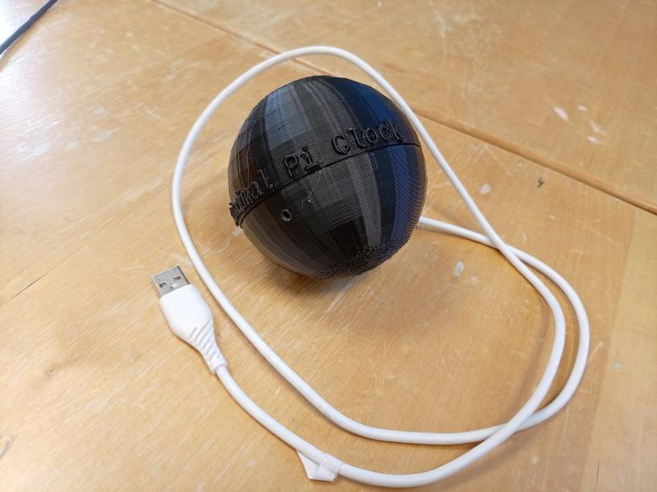
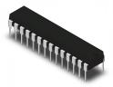
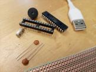
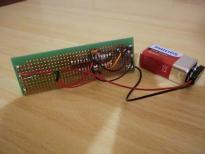
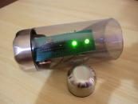

Building a Minimal Pi Clock workshop¶
In this workshop we build the start of a Minimal Pi Clock (costs: 160 kr). Alternatively, without soldering any component (hence for free), we learn how to build a bare-bone Arduino.
Goal¶
The first goal of this workshop is to be able to create a bare-bone Arduino machine, i.e. a machine that only uses the ATmega328P chip of an Arduino (and not a complete Arduino Uno):
{kind=link}
The machine we'll build is a Minimal Pi Clock.
Using the skills taught in this workshop, you can build you own machines using only the ATmega328P chip.
The second and optional goal of this workshop is to make this into a proper Minimal Pi Clock.

A Minimal Pi Clock. The electronics are soldered on a PCB and hidden inside the spherical casing.
Event details¶
- Date: Saturday July 25th 2026
- Time: 12:00 (sharp!) to 14:00 (see schedule for detailed schedule)
- Target audience: any Uppsala Makerspace member
- Bring with you: nothing. Optional/ideally: a laptop
- Where: electronics workshop, at the second floor of the Uppsala Makerspace
- Language: English, questions can be asked in Swedish
- Costs: free
- Registration: not needed
Other questions? See the 'Frequently Asked Questions' page.
Procedure¶
| Step | Procedure | Result | Image |
|---|---|---|---|
| 1 | Burn bootloader to chip | ATmega328P with bootloader |  |
| 2 | Upload program to chip | ATmega328P with program | |
| 3 | Build schematic on breadboard | Minimal Pi Clock on breadboard |
{kind=link}
For those that want to make the Minimal Pi Clock into a real machine, there are optional additional steps with an additional cost:
| Step | Procedure | Result | Image |
|---|---|---|---|
| 4 | Buy components | All components needed |  |
| 5 | Solder the PCB | Minimal Pi Clock on PCB |  |
| 6 | Connect the PCB to a casing | Minimal Pi Clock in a pretty casing |  |
{kind=link}
{kind=link}
{kind=link}